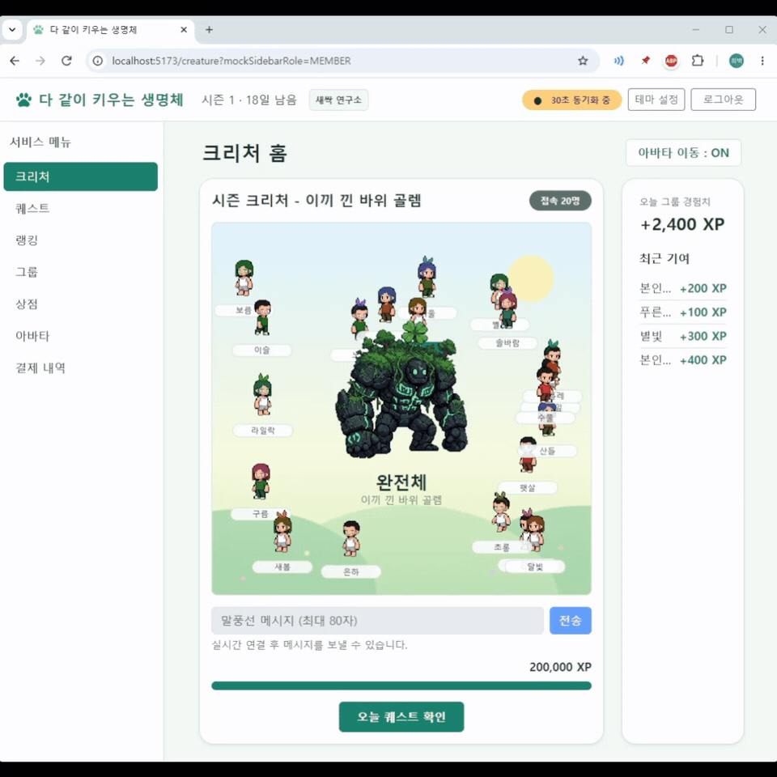
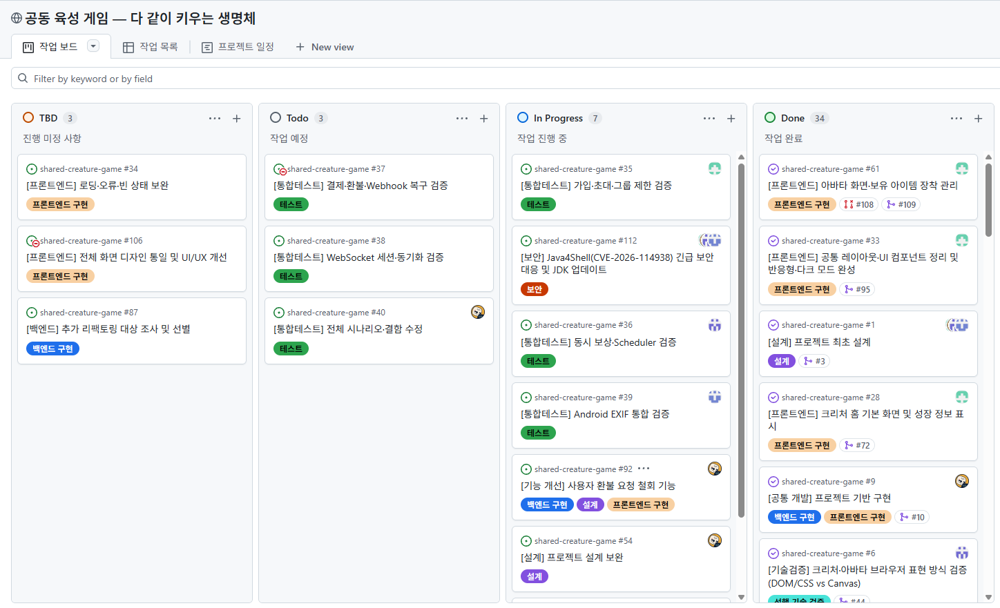
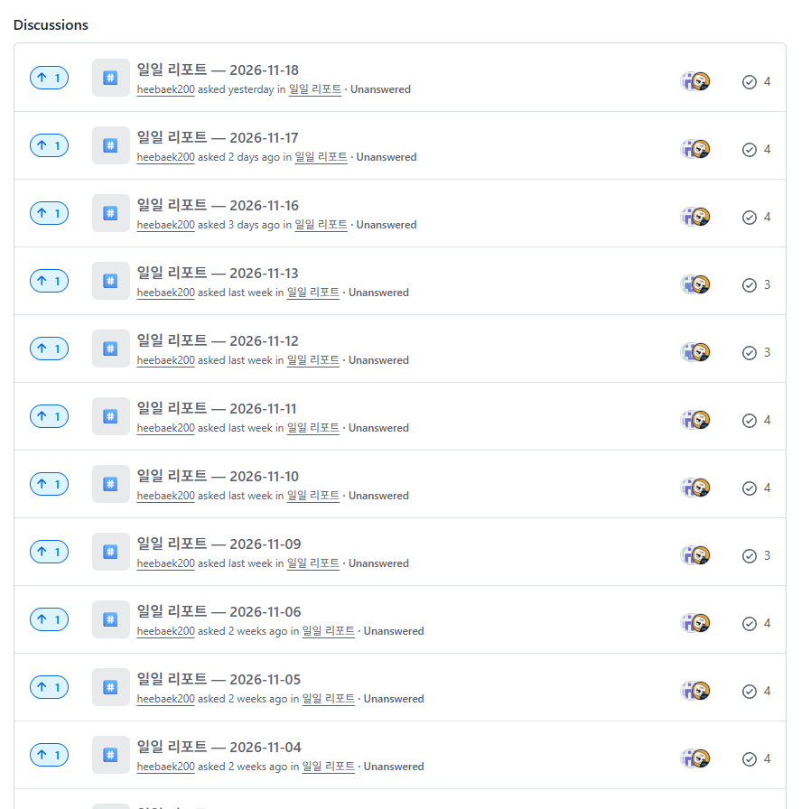
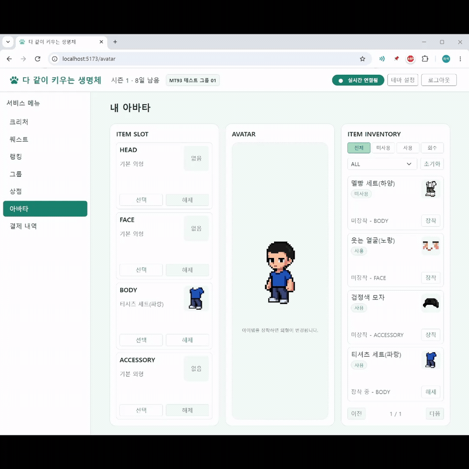
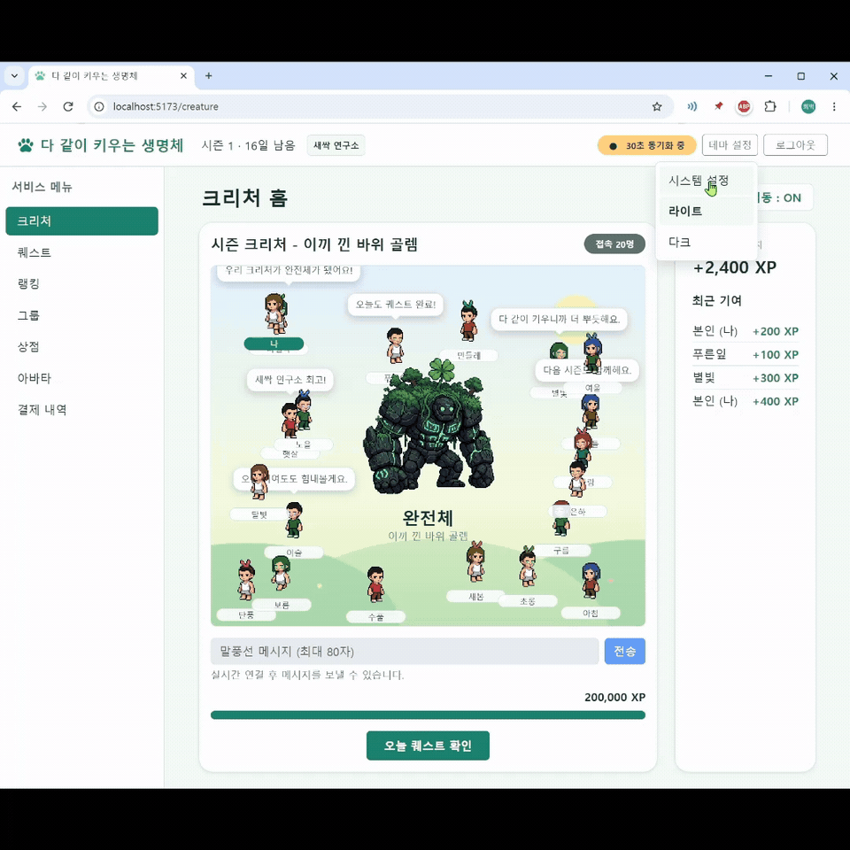

공개 그룹
사용자는 공개 그룹에 자유롭게 가입하거나 새로운 그룹을 만듭니다.
일상 속 작은 활동을 게임으로 연결하고, 여러 사용자가 하나의 생명체를 함께 성장시키는 웹 기반 소셜 육성 서비스

규칙적인 생활이나 가벼운 야외 활동은 혼자 꾸준히 실천하기 어렵고, 새로운 사람과 적극적으로 교류하는 일도 부담스러울 수 있습니다.
사용자는 공개 그룹에 자유롭게 가입하거나 새로운 그룹을 만듭니다.
기상 체크인과 사진 인증 등 작은 활동을 수행합니다.
개인의 활동은 기여도로 기록되고 그룹 크리처의 성장에 반영됩니다.
개인·그룹 랭킹으로 참여 동기를 이어갑니다.
Google·Naver 로그인 후 공개 그룹에 가입하거나 그룹을 생성합니다.
일일·주간 체크인과 JPEG EXIF 사진 퀘스트를 수행합니다.
보상·기여도·경험치가 반영되고 변화가 실시간으로 공유됩니다.
개인·그룹 랭킹을 확인하고 아바타 꾸미기 아이템을 이용합니다.
Google·Naver 소셜 로그인, 공개 그룹 가입, Gemini 제안을 활용한 그룹 생성, 초대 링크 참여
일일·주간 퀘스트, JPEG EXIF 사진 인증, 기여도·경험치 반영, 개인·그룹 시즌 랭킹
PortOne V2 테스트 결제, 아이템 지급, 아바타 장착, 사용 여부 기반 환불 제한
역할 변경, 주 관리자 이전, 초대 링크 재발급, 신고·환불·Scheduler 운영 화면
새로고침 없는 이동, URL 복원, 반응형 내비게이션, 시스템·라이트·다크 테마
크리처의 기본 육성은 비과금이며, 테스트 결제는 사용자 아바타 꾸미기에 연결했습니다.
팀원들이 함께 설계를 수립한 뒤, 확정된 설계를 기준으로 기능별 구현을 진행했습니다. 구현 중 발견한 변경 사항은 다시 문서에 반영했습니다.

설계 단계에서 정의한 기능을 구현 가능한 작업 단위의 Issue로 나누고, 담당자와 구현 범위, 업무 규칙, API 계약 및 완료 조건을 정리했습니다.
칸반 보드에서 각 팀원의 현재 작업과 다음 작업을 확인하고, Pull Request를 통해 구현 내용을 공유했습니다.
설계 문서 → Issue → 구현 및 Pull Request로 이어지는 작업 이력을 관리했습니다.
GitHub Projects 보기각 팀원은 그날 진행한 작업, 다음에 진행할 작업, 작업 과정에서 느낀 점을 GitHub Discussions에 기록했습니다.
각자의 작업 현황과 다음 작업을 파악
어려움과 지연 요소를 공유해 지원·조율
수행한 작업과 판단을 돌아보고 방향 정리
결과뿐 아니라 과정과 팀원의 경험을 보존

| 분류 | 기술 | 프로젝트에서의 역할 |
|---|---|---|
| 언어·빌드 | Java 21, JavaScript ES Modules, Gradle, npm | Spring Boot 서버와 브라우저 애플리케이션 구현, 의존성·빌드 관리 |
| 백엔드 | Spring Boot 4.1.1, Spring MVC, Spring Security, Spring Data JPA | REST API, 세션 인증·역할 인가, 트랜잭션과 영속성 관리 |
| 프론트엔드 | Vite 7, Vanilla JavaScript, Bootstrap 5, HTML/CSS | History API 기반 CSR/SPA, 반응형 화면과 공통 테마 구성 |
| 데이터베이스·세션 | MySQL 8, Spring Session JDBC | 업무 데이터와 로그인 세션 영속화, UNIQUE·락 기반 정합성 보장 |
| 인증 | OAuth 2.0 Authorization Code, OpenID Connect | Google·Naver 소셜 인증, 공급자 신원 검증과 서버 세션 로그인 |
| 실시간 | WebSocket, STOMP | 그룹별 상태 이벤트·Presence·아바타 동기화와 Snapshot 복구 신호 전달 |
| 외부 서비스 | PortOne V2, Gemini API, Metadata Extractor | 테스트 결제·환불, 그룹 소개 교정, JPEG EXIF 추출 |
| 정기 작업 | Spring Scheduler | 시즌·퀘스트·부화, 결제·환불 복구, 사진 보존 기한 정리 |
| 테스트 | JUnit 5, Spring Boot Test, Spring Security Test | 단위·통합·동시성·보안 경계 검증 |
Spring Boot REST API와 Vite 프론트엔드를 분리하고 History API, Page 생명주기, App Shell, Fetch Client를 직접 구현했습니다.
Google·Naver OAuth/OIDC, Spring Security, JDBC Session, state·nonce, CSRF와 역할별 401·403을 연결했습니다.
WebSocket/STOMP로 성장·아바타·Presence·채팅을 공유하고, 누락 시 REST Snapshot으로 복구합니다.
락, UNIQUE, 멱등성 키와 원장을 조합해 동시 가입·중복 보상·Webhook 경합을 제어했습니다.
PG 거래를 서버에서 재검증하고 Webhook·Scheduler로 결과 불명 결제와 환불을 복구합니다.
JPEG Signature·EXIF를 재검증하고 고정 Worker, Timeout, 제출 제한과 보존 기한으로 작업량을 제어합니다.
복잡한 기술을 더하는 대신 현재 규모에서 끝까지 검증할 수 있는 방법을 선택하고, 남은 한계까지 기록했습니다.
빠른 화면 갱신은 WebSocket, 누락·재접속 뒤 정확한 상태 복구는 REST Snapshot과 30초 조회가 맡습니다.
서버가 꺼져 놓친 작업은 실행 기록을 재생하지 않고, 현재 시각과 DB 상태를 확인해 필요한 작업만 복구합니다.
응답을 못 받았다고 실패로 단정하지 않습니다. 최신 PG 상태를 조회해 환불 결과를 확정하고 중복 취소를 막습니다.
조건부 갱신, 잠금과 UNIQUE 제약을 함께 사용해 동시 가입에도 정원과 단일 소속 규칙을 지킵니다.
알 상태도 정상 시즌으로 인정하도록 완료·보상 조건을 고치고, 화면에는 서버의 구체적인 오류 설명을 우선 표시했습니다.
최대 20명 규모에서는 대량 렌더링보다 클릭·말풍선·접근성과 기존 화면 재사용이 더 중요했습니다.
문서마다 하나의 책임을 부여하고, 계약 복사본의 동기화 비용을 확인한 뒤 단일 원본을 참조하는 원칙을 남겼습니다.
shared-creature-game/ ├── docs/ # 기획·요구사항·DB·API·화면 설계 및 검증 기록 ├── frontend/ │ ├── assets/ # 이미지·그래픽 에셋 │ └── src/ │ ├── app/ # 애플리케이션 시작·라우팅 │ ├── api/ # 공통 HTTP 요청과 오류 처리 │ ├── components/ # 공통 UI 구성 요소 │ ├── features/ # 기능별 API·UI 구성 │ ├── pages/ # 화면(Route) 단위 컴포넌트 │ ├── realtime/ # WebSocket 연동 │ └── styles/ # 전역·테마 스타일 ├── src/ │ ├── main/ │ │ ├── java/com/team/sharedcreature/ │ │ │ ├── _core/ # 인증·예외·공통 인프라 │ │ │ ├── auth/ # 사용자 인증 │ │ │ ├── group/ # 그룹 및 멤버십 │ │ │ ├── quest/ # 퀘스트와 보상 │ │ │ ├── payment/ # 결제 연동 │ │ │ ├── ai/ # Gemini 교정 │ │ │ └── ... # 크리처·아바타·운영 등 기타 도메인 │ │ └── resources/ │ │ ├── db/ # SQL 초기화·데이터 및 로컬 테스트 자료 │ │ ├── application.yaml # 공통 설정 │ │ └── application-local.yaml │ └── test/ # 백엔드 자동 테스트 ├── .env.example # 로컬 환경변수 예시 ├── build.gradle # Spring Boot·Java 의존성 └── README.md
43개의 업무 테이블 중 핵심 흐름과 관계가 드러나는 테이블을 발췌했습니다.
|| 1개 · o{ 0개 이상 · o| 0개 또는 1개
데이터베이스 설계서 및 전체 ERD 보기| 기능 | 화면 URL | 대표 Backend API |
|---|---|---|
| 로그인·가입 | /login, /signup | POST /api/v1/auth/oauth-attempts, POST /api/v1/auth/signup |
| 공개 그룹·AI 교정 | /groups/select | GET /api/v1/groups, POST /api/v1/groups, POST /api/v1/ai/proofreads |
| 그룹 현황·관리 | /group, /group-admin | GET /api/v1/groups/me, GET /api/v1/groups/me/members |
| 크리처 육성 | /creature | GET /api/v1/groups/me/creature-home |
| 퀘스트·사진 인증 | /quests | GET /api/v1/quests/current, POST /api/v1/photo-submissions |
| 랭킹 | /rankings | GET /api/v1/rankings/members, GET /api/v1/rankings/groups |
| 상점·아바타 | /shop, /avatar | GET /api/v1/shop-items, GET /api/v1/avatar |
| 구매·환불 내역 | /payments | GET /api/v1/purchases, GET /api/v1/refund-requests |
| 관리자 | /admin, /admin/reports, /admin/refunds, /admin/operations | GET /api/v1/admin/dashboard, GET /api/v1/admin/refund-requests |
WebSocket은 /ws 연결을 사용하며, Vite 개발 서버가 /api, /oauth2, /ws 요청을 Spring Boot로 프록시합니다.


OpenJDK의 Base64 디코딩 처리 과정에서 메모리 손상과 원격 코드 실행 가능성이 제기된 고위험 취약점입니다.
기능 구현뿐 아니라 개발 환경의 보안 이슈까지 함께 생각해보았습니다.
보안 대응 과정 · Issue #112실제 API·MySQL·외부 연동 환경에서 가입, 보상, 결제, WebSocket, 모바일 EXIF와 전체 흐름을 확인했습니다.
결함과 UX 개선점을 별도 QA 피드백 이슈로 분리해 영향과 재현 범위를 기록했습니다.
닉네임 검증, 소속 그룹 안내, 부화 전 퀘스트·오류 안내를 수정하고 PR 병합을 확인했습니다.
사진 후속 보완, 직접 촬영, 계정 탈퇴 등 미완료 항목은 해결로 세지 않고 시연 제외 범위를 공개했습니다.
| 검증 범위 | 요약 | 남은 범위 |
|---|---|---|
| 가입·초대·그룹 제한 | 기본 흐름 확인 | 계정 탈퇴 화면 제외, 수동 동시성은 자동 테스트로 보완 |
| 퀘스트 보상·Scheduler | 기본·선택 검증 PASS | 전체 사용자 흐름에서 연결 확인 |
| 결제·환불·Webhook | 기본 5건 PASS | 테스트 결제 환경 기준 |
| WebSocket 세션·동기화 | 기본 3건 + 추가 5건 PASS | 일부 복구·보안 경계 미검증 |
| 모바일 사진·EXIF | Android JPEG 범위 확인 | iOS·직접 촬영·실제 HEIC 제외 |
| QA 피드백 | 3건 수정 6건 스킵 | 스킵 항목은 시연에서 제외 |
프로젝트 관리 · GitHub Projects, 설계 문서
백엔드 · 기반, Scheduler, WebSocket, 그룹, 관리자
프론트엔드 · 퀘스트, 상점·결제, 관리자
기술 검증 · 그래픽 리소스 확보·활용
리소스 준비 · 크리처·아바타 그래픽
프론트엔드 · 크리처 홈, 레이아웃·테마, 아바타
기술 검증 · JPEG EXIF 사진 인증
백엔드 · 퀘스트, 아이템, 랭킹, 환불
품질 개선 · 백엔드 리팩터링
기술 검증 · 브라우저 그래픽 표현
백엔드 · Naver OAuth, Gemini
프론트엔드 · 회원가입·그룹 관리, OAuth, AI 교정